Sou estudante de Análise e Desenvolvimento de Sistemas no IFPB, foco em evoluir, estudar e participar constantemente na área para tentar me destacar academicamente. Tenho bastante interesse em programação, e desempenho meus estudos a fim de construir uma base sólida para minha carreira profissional. No meu tempo livre, gosto de cuidar dos meu gatos, tirar fotos de belas paisagens, ouvir música e tenho playlists de diversos tipos para o meu dia a dia, e praticar musculação. Costumava ler, e praticar corrida também, porém tenho parado a um tempo. Também gosto muito de organizar meu ambiente de estudo, buscando sempre um espaço agradável, e cuidar da minha saúde, me alimentando bem.
Formação Acadêmica
- Operador de Microcomputador
- Curso que proporcionou minha introdução na área da tecnologia. Realizado aos 12 anos, contribuiu para o desenvolvimento das minhas primeiras habilidades com o uso da internet.
- Programa Conexão Mundo
- Programa do Estado da Paraíba que me proporcionou uma experiência de imersão cultural em um país estrangeiro, paralelo a noções de ensino acadêmico internacional. Realizado durante o ensino médio, ampliou minha visão de mundo e zelo pela educação.
Experiências ou Projetos
- Sistema de Monitoramento de Consumo de Energia Residencial(fictício)
- Aplicação para monitorar e analisar o consumo de energia em residências. O sistema permite registrar o uso de aparelhos elétricos, gerar relatórios de consumo e identificar possíveis desperdícios.
- Aplicativo de Planejamento de Viagens(fictício)
- Aplicação para organização de viagens, permitindo ao usuário montar roteiros, listar pontos de interesse, calcular custos estimados e gerenciar cronogramas.
Habilidades
- Lógica de Programação
- HTML & CSS
- Linguagem C
- Liderança e Gestão de Equipe
- Lista de Habilidades
Informações Adicionais
animais de estimação
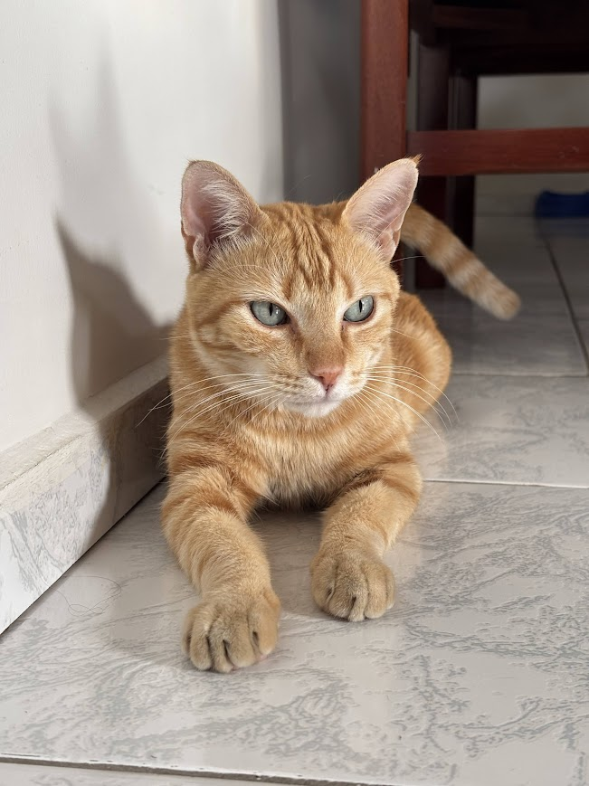
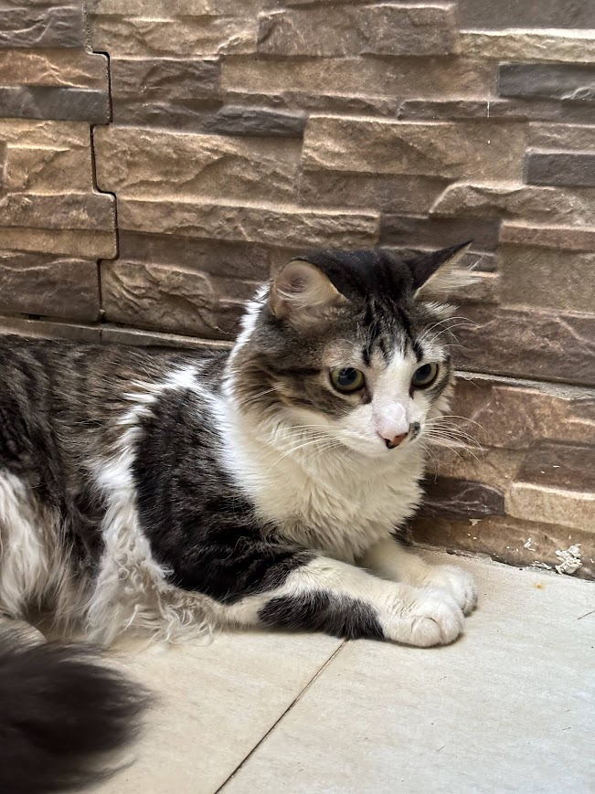
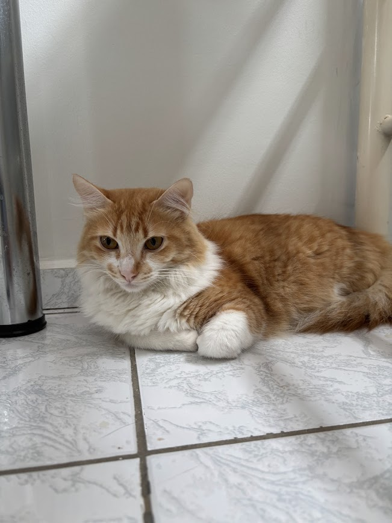
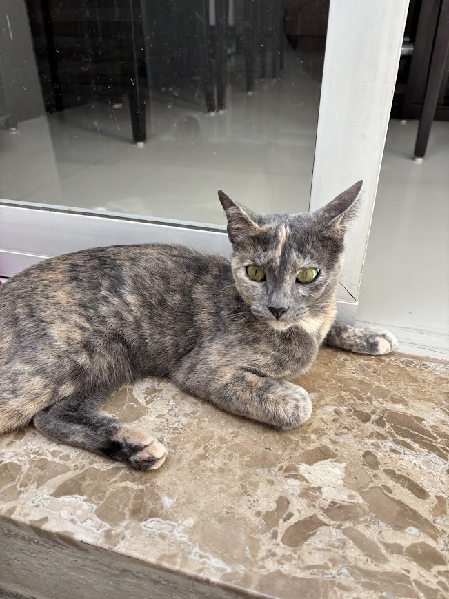
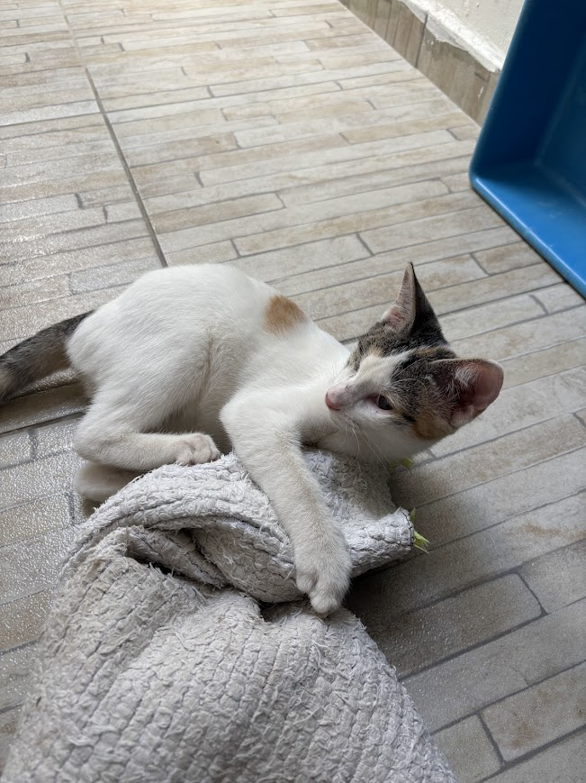
fotos de paisagens tiradas na Inglaterra
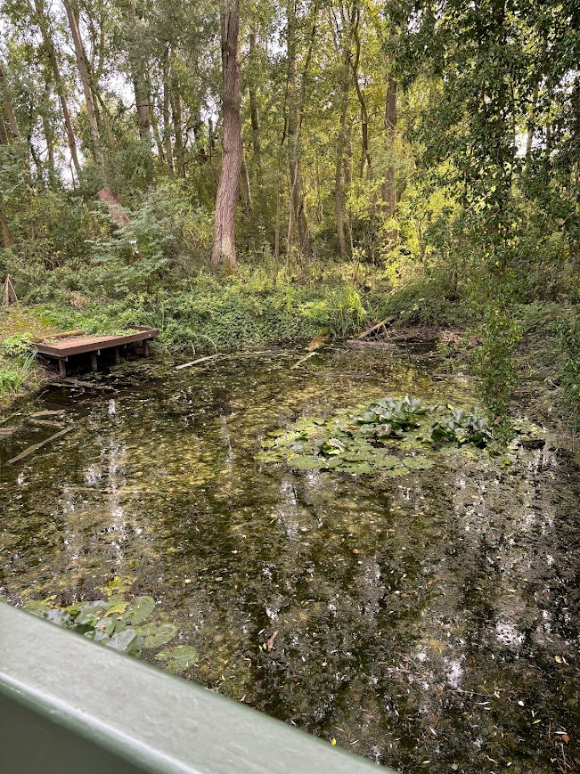
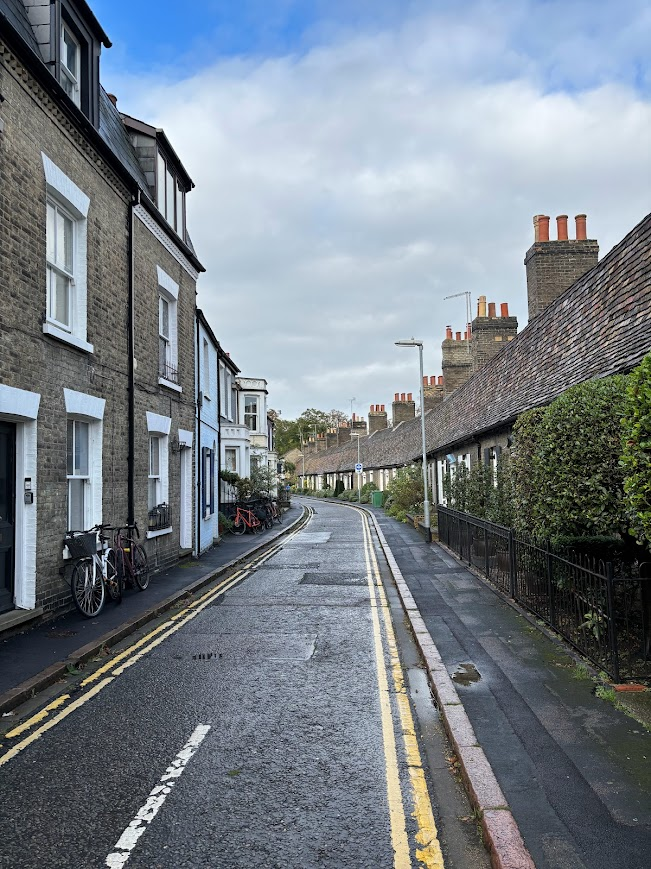
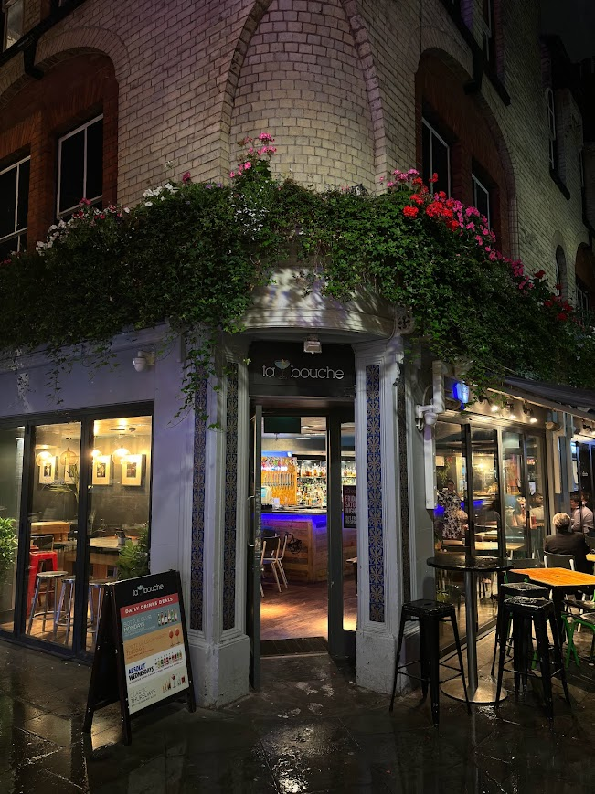
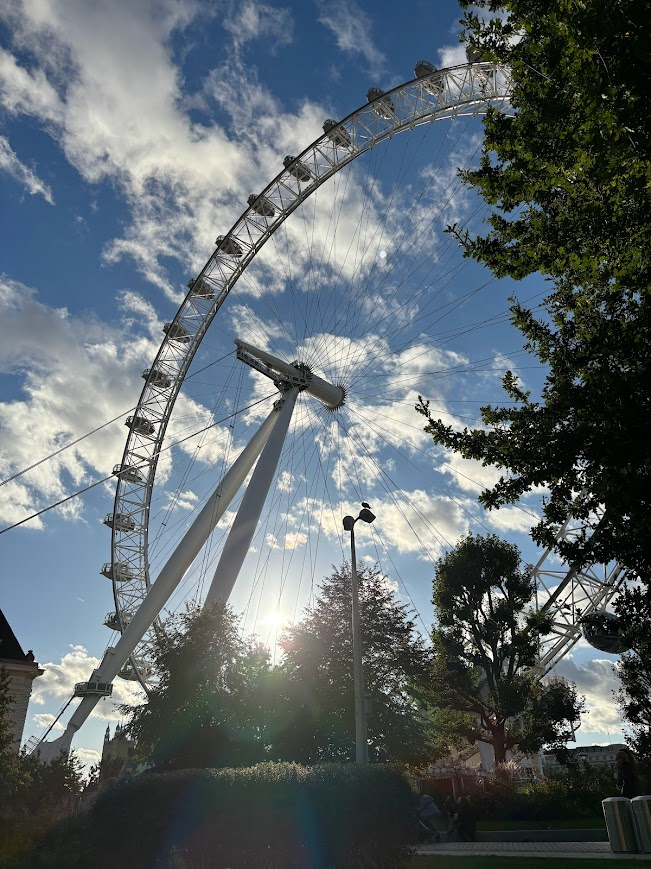
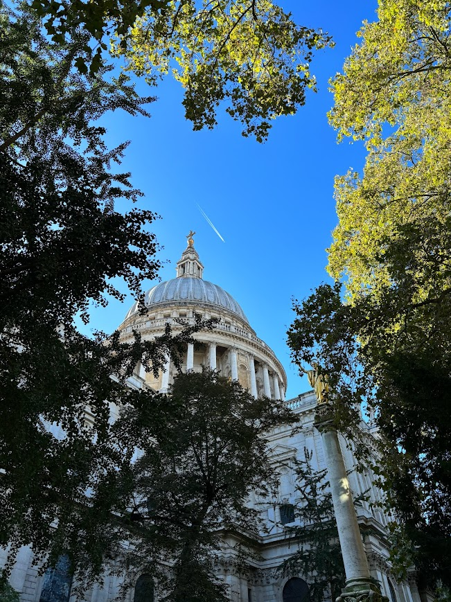
fotos de paisagens tiradas no Brasil
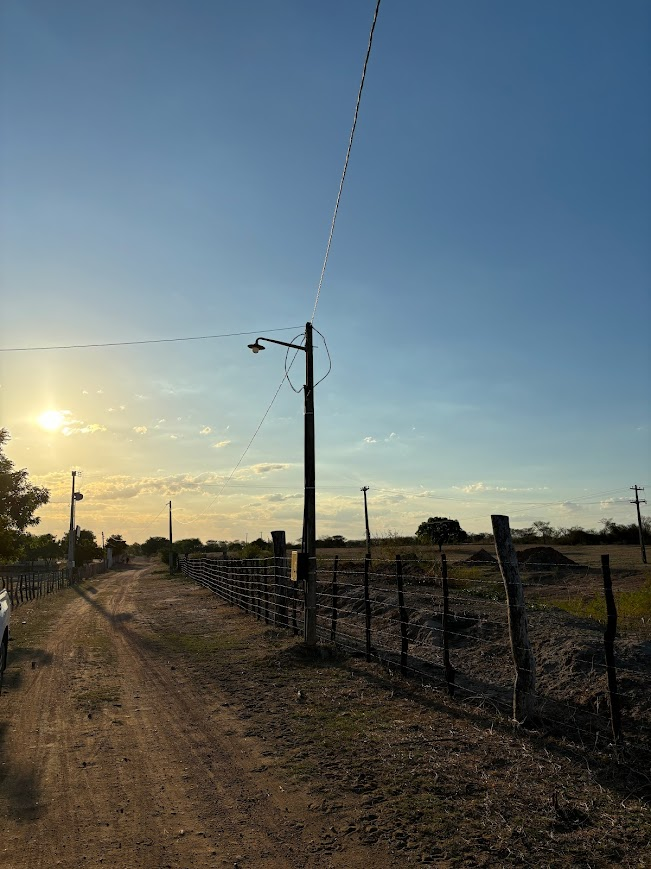
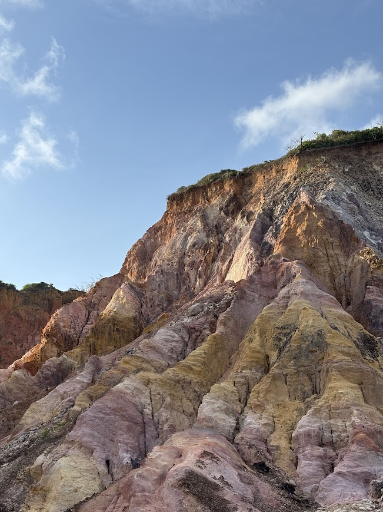
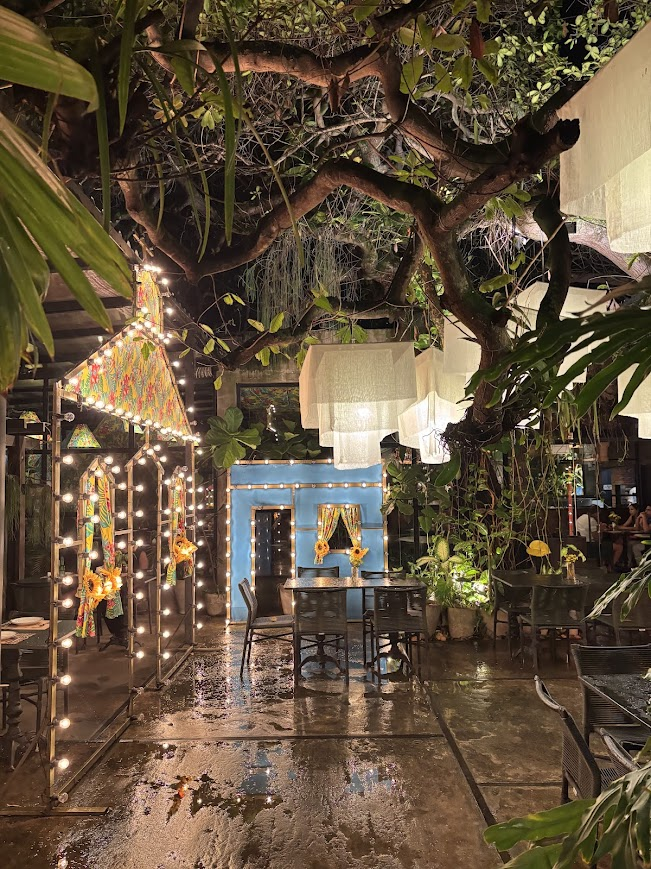
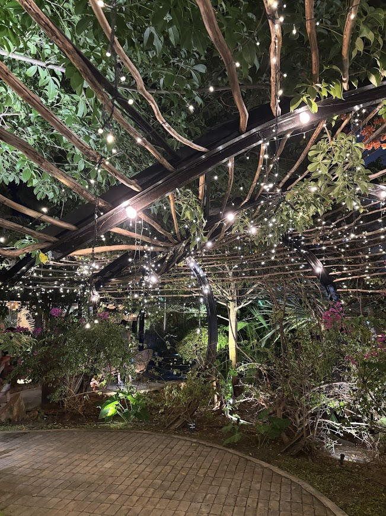
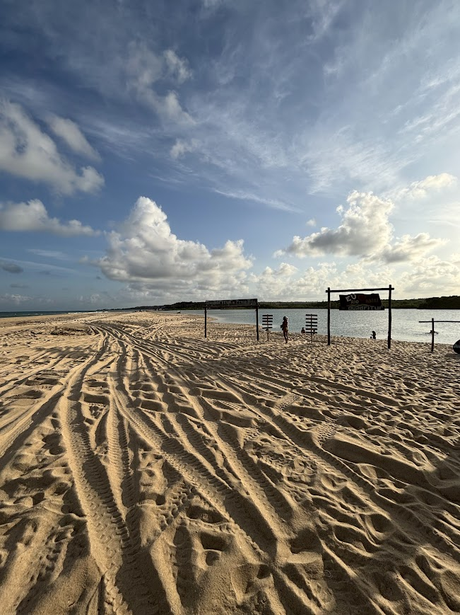